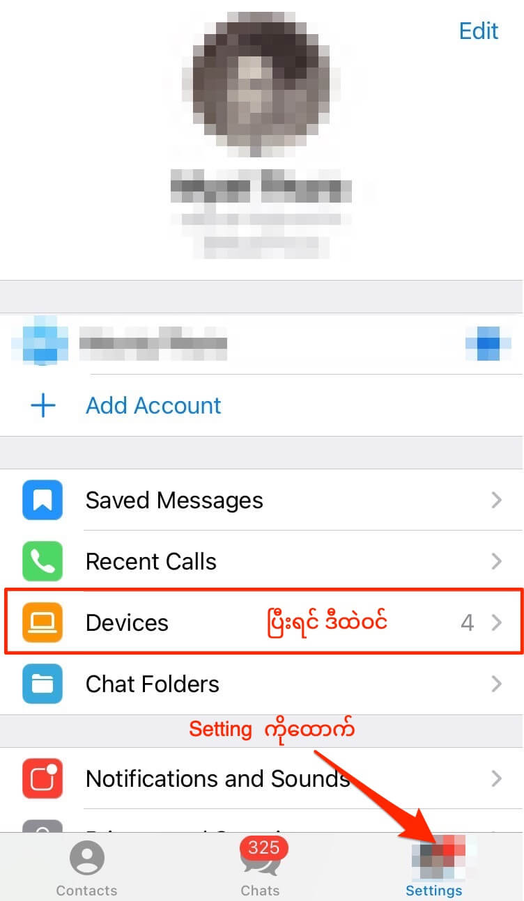
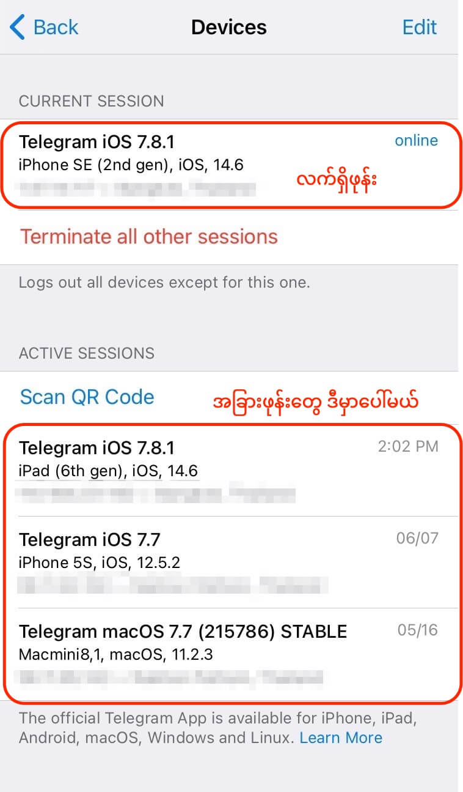
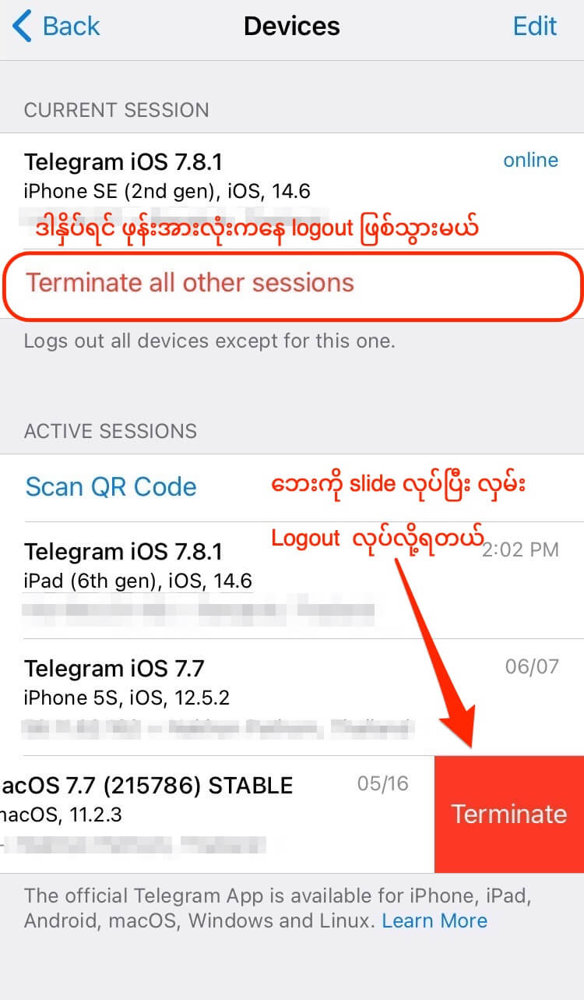
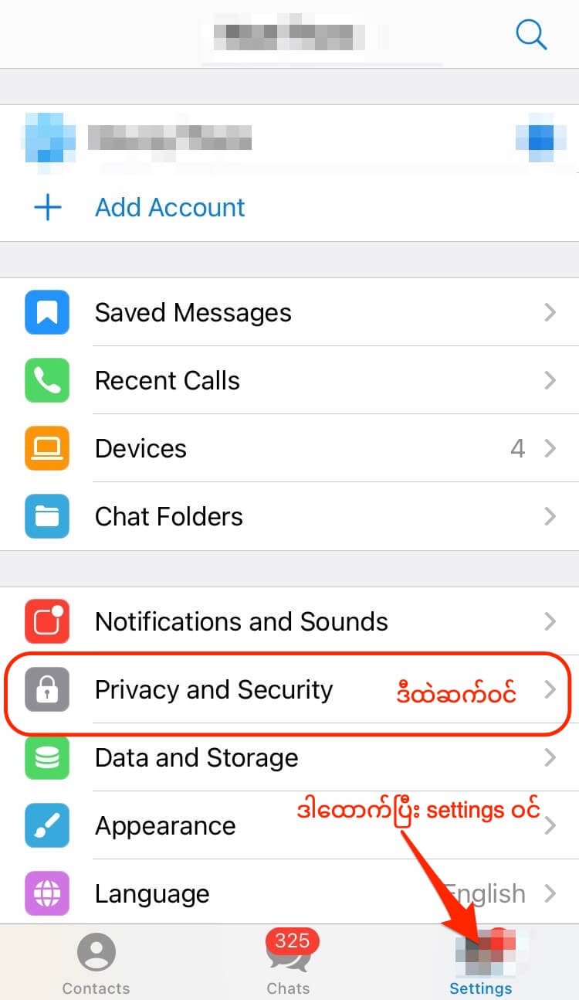
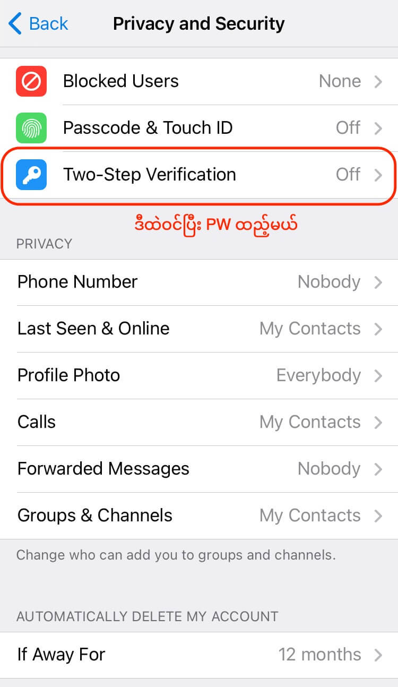
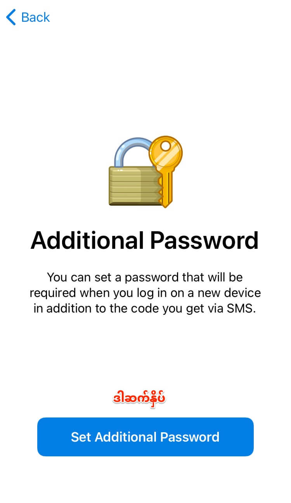
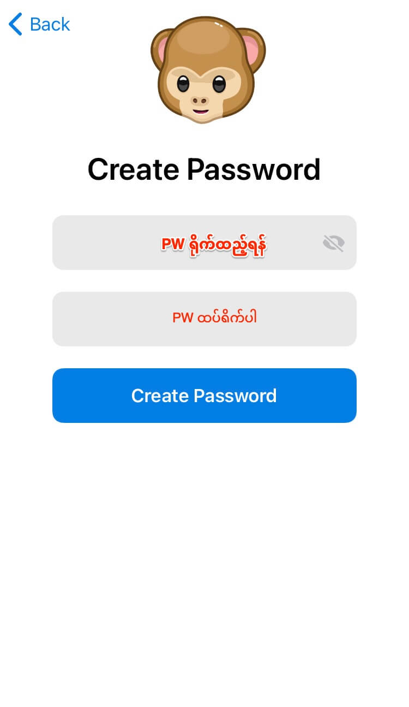
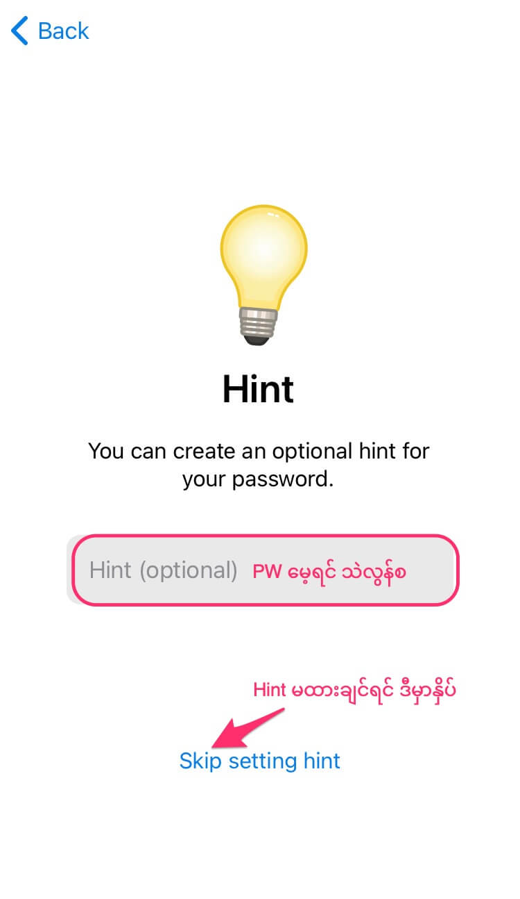
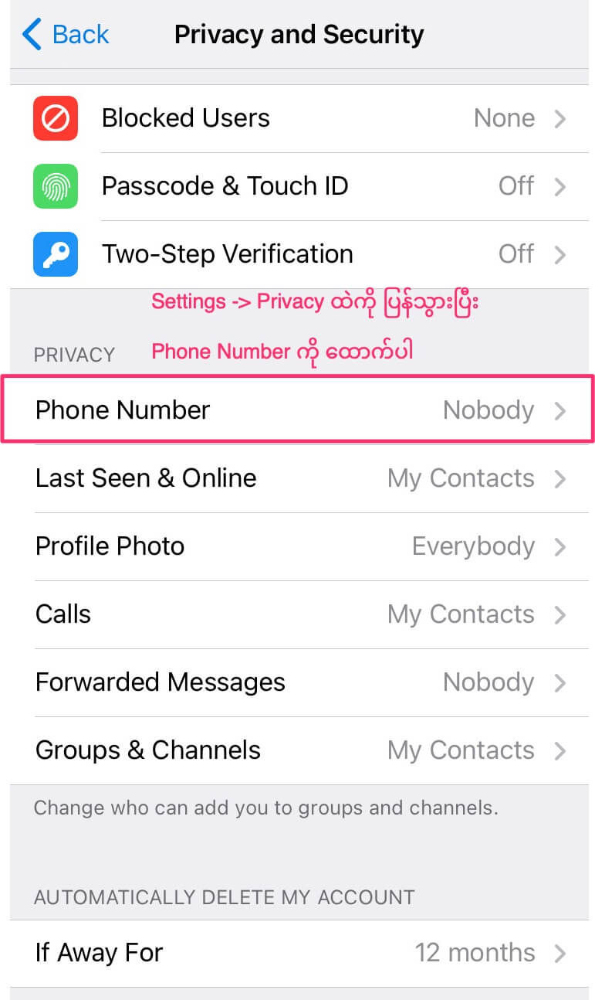
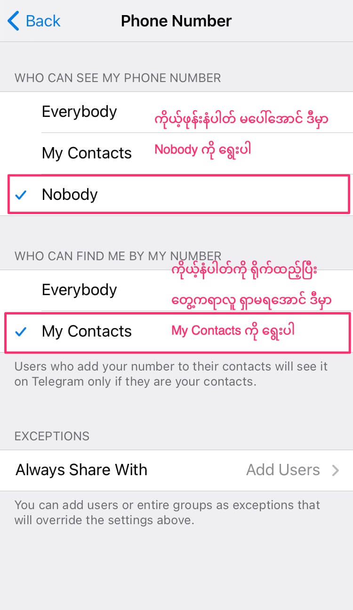

Telegram အကောင့်ကို hack လုပ်နိုင်သလား
Telegram ဟာ အတော်ကို လုံခြုံစိတ်ချရမှု ရှိပေမယ့် လုံးဝ 100% တော့ စိတ်ချရတာ မဟုတ်သေးပါဘူး။ တယ်လီဂရမ် အကောင့်တွေရဲ့ လုံခြုံရေးကို သေခြာ ဂရုမစိုက်ခဲ့ရင် အကောင့် အခိုးခံရတာမျိုး၊ အဖောက်ခံရတာမျိုး ဖြစ်နိုင်ပါတယ်။ ဖြစ်လဲ ဖြစ်ခဲ့ပါတယ်။ ပြီးခဲ့တဲ့ နှစ်က အီရန်မှာ တက်ကြွလှုပ်ရှားသူ တွေရဲ့ အကောင့်တွေ ရာချီ အဖောက်ခံ ခဲ့ရသလို ရုရှားက တက်ကြွ လှုပ်ရှားသူ တွေရဲ့ အကောင့်တွေလဲ အဖေါက်ခံ ရပါတယ်။ဒါဆို လုံခြုံပါတယ် ဆိုပြီး ဘာကြောင့်မို့ ဖောက်ထွင်း ခံရတာလဲ။ ဘာ့ကြောင့် ဖောက်နိုင်သလဲ ဆိုတော့ Telegram ရဲ့ log in ဝင်တဲ့ စနစ်ရဲ့ အားနဲချက်ကြောင့်ပဲ ဖြစ်ပါတယ်။ တယ်လီဂရမ် ကို ဖုန်းမှာ ဝင်မယ်ဆို မှတ်ပုံတင်ထားတဲ့ ဖုန်းဆီကို SMS code ပို့ပေးပါလိမ့်မယ်။ သာမန်အားဖြင့် ကြည့်ရင်တော့ ကိုယ့်ဖုန်းက ကိုယ့်လက်ထဲမှာမို့ ဘယ်လိုမှ မဖောက်နိုင် ဘူးလို့ ထင်စရာ ရှိပါတယ်။ ဒါပေမယ့် ဒီ SMS message ဆိုတာက ဝှက်စာ သွင်းထားတဲ့ လုံခြုံစိတ်ချရတဲ့ ကြေးနန်းစာတို မဟုတ်ပါဘူး။ ရိုးရိုး plain text နဲ့ ပို့တာမို့ ကြားက ဖုန်းအော်ပရေတာ ကနေ ဖြတ်ပြီး ဖတ်လို့ ရပါတယ်။ ဆိုလိုတာက ဖုန်း အော်ပရေတာကို မတရားတဲ့ အစိုးရ အဖွဲ့အစည်းတွေက ထိန်းချုပ်ခွင့် ရသွားမယ်ဆိုရင် မိမိဖုန်းကို လှမ်းပို့တဲံ SMS code ကို ကြားဖြတ်ဖမ်းယူပြီး log in လုပ်တဲ့ နည်းပဲ ဖြစ်ပါတယ်။ အီရန်နဲ့ ရုရှားမှာ ဒီနည်းကို အသုံးပြုပြီး အစိုးရ ဆန့်ကျင်သူတွေရဲ့ တယ်လီဂရမ် အကောင့်တွေ ဖောက်ထွင်းခံခဲ ကြရတာပဲ ဖြစ်ပါတယ်။
အကယ်လို့ ဖုန်း အော်ပရေတာကို မထိန်းချုပ် နိုင်ဘူး ဆိုရင်တောင် လေလှိုင်းထဲမှာ သွားနေတဲ့ ဒီ SMS တွေကို ကြားဖြတ်ဖမ်းယူနိုင်တဲ့ နည်းလမ်းတွေ ရှိပါသေးတယ်။ အထူသဖြင့် hacker ဂုဏ်းကြီးတွေဆိုရင် ကြားဖြတ်ဖမ်းယူ နိုင်ပါတယ်။
Telegram account hack အလုပ်ခံရမှန်း ဘယ်လို သိမလဲ
ကြားဖြတ်ဝင်ရောက်ပြီး အကောင့် log in လုပ်ထားတဲ့ သူက ဘာမှ ဝင်ပြောတာ၊ setting တွေ ဝင်ပြင်တာ မလုပ်ခဲ့ ဘူးဆိုရင်တော့ ပုံမှန်ဆို မသိနိုင်ပါဘူး။ ဒါပေမယ့် ကိုယ့်ရဲ့ ဖုန်းက တယ်လီဂရမ် app ရဲ့ setting မှာ ဝင်ကြည့်ပြီး ကိုယ့်အကောင့်ကို လက်ရှိ ဘယ်ဖုန်းတွေ၊ ကွန်ပြူတာ တွေကနေ log in ဝင်ထားသလဲ ဆိုတာကို အလွယ်တကူ ကြည့်လို့ ရပါတယ်။ အဲ့သသည်မှာ ကိုယ်မသိတဲ့ device တစ်ခုခု တွေ့ရင် သေချာပါတယ်၊ ကိုယ့်အကောင့်တော့ hack လုပ်ခံ ထိထားပြီ ဆိုတာပါ။ဆက်စပ်ဆောင်းပါး
လု့ခြုံစိတ်ချရဖို့ Telegram Settings ပြောင်းဖို့
Active device list ဝင်ကြည့်နည်း
- ပထမဆုံး Telegram App ရဲ့ အောက်ဆုံးမှာ ရှိတဲ့ ကိုယ့်ပုံကို ထောက်လိုက်ပါ။ ဒါဆို Account Setting ထဲ ရောက်သွားပါမယ်။

- Devices ကို ထောက်လိုက်ပါ။ အဲ့ဒီမှာ ကိုယ့် အကောင့်နဲ့ လက်ရှိ ဝင်ထားတဲ့ ဖုန်း၊ ကွန်ပြူတာ၊ tablet တွေ စာရင်း တွေ့ပါလိမ့်မယ်။ အပေါ်ဆုံးက ပြတဲ့ဟာက မိမိရဲ့ လက်ရှိ ဝင်ကြည့်နေတဲ့ ဖုန်း ဖြစ်ပါတယ်။ အောက်က ပြထားတဲ့ device တွေက လက်ရှိ log in ဝင်ထားတဲ့ အခြား device တွေပဲ ဖြစ်ပါတယ်။

- အဲ့ထဲမှာ ကိုယ်မသိတဲ့ device တစ်ခုခု တွေ့ရင် သေခြာပါတယ်။ ကိုယ့်အကောင့် hack အလုပ်ခံ ထားရပြီ ဆိုတာပါပဲ။
- အဲ့ ဖုန်း ကို ထောက်ပြီး ဘေးကို slide လုပ် ဆွဲလိုက်ရင် Terminate ဆိုတဲ့ စာလုံး ပေါ်လာပါမယ်။ အဲ့ Terninate ကို ထောက်လိုက်ပါ။ ဒါဆို အဲ့ဖုန်းမှာ ဝင်ထားတဲ့ log in ပျက်သွားပါမယ်။

Telegram Account Hack အလုပ်မခံရအောင် ဘယ်လို ကာကွယ်မလဲ
တကယ်တော့ အကောင့် hack လုပ်မခံရအောင် ကာကွယ်တာ သိပ်တော့ မခက်ပါဘူး။ ဘာလုပ်ရမလဲ ဆိုရင် Password တစ်ခု ခံလိုက်တာပါပဲ။ ဒီလို PassWord ခံဖို့ဆို Tow Factor Authentication (2FA) ကို ဖွင့်ပေးရပါမယ်။ 2FA ဖွင့်လိုက်ရင် ပုံမှန် log in လုပ်သလိုမျိုး ဖုန်း SMS ရရုံနဲ့ အကောင့်ခိုးဖို့ မလွယ်တော့ပါဘူး။ ဒီနည်းမှာဆို အကောင့် ဝင်ဖို့ဆို SMS Code တင်မက Password လဲ သွင်းပေးရပါမယ်။ SMS code ရော Password ရော နှစ်မျိုးလုံး မှန်မှ အကောင့်ဝင်လို့ ရပါတော့မယ်။2FA ကို ဘယ်လို ဖွင့်ရမလဲ
2FA ဖွင့်တာက လွယ်ပါတယ်။- ကိုယ့်ဖုန်းပေါ်က Telegram App အောက်ခြေက ကိုယ့်ပုံကို ထောက်လိုက်ပြီး Settings ထဲ ပြန်ဝင်ပါ။
- Privacy and Security ကို ထောက်လိုက်ပါ။ Privacy and Security Setting ထဲ ရောက်သွားပါမယ်။

- Two-Step Verification ကို ထောက်ပါ။

- နောက် screen မှာ Set Additional Password ဆိုတာကို ထောက်ပါ။

- နောက် screen မှာ Password ရိုက်ထည့်ပါ။ နှစ်ခါ ရိုက်ထည့်ပါမယ်။

- Password မေ့သွားရင် သတိရအောင် Password Hint လေး ထည့်ပါ။

- Password လုံးဝ မေ့သွားရင် ပြန် reset လုပ်ရအောင် ကိုယ့်မှာ email ရှိရင် recovery email အနေနဲ့ ထည့်ထားလို့ ရပါတယ်။ မရှိလဲ ကိစ္စ မရှိပါဘူး။ PW သာ မမေ့အောင် မှတ်ထားလိုက်ပါ။ Recovery email မရှိရင် အောက်ဆုံးက Skip setting email ကိုထောက်ပြီး ဆက်သွားပါ။
- Recovery email ကို ခုနက အဆင့်မှာ ထည့်ခဲ့ရင် code နံပါတ် လှမ်းပို့ပေးပါလိမ့်မယ်။ အဲ့သည် ကုဒ်နံပါတ်ကို နောက်တဆင့်မှာ ရိုက်ထည့်ရပါမယ်။ Recovery email set မလုပ်ခဲ့ဘူးဆိုရင်တော့ ဒီအဆင့် မပါတော့ပါဘူး။
- Return to Setting ကို နှိပ်ပြီး Setting စာမျက်နှာကို ပြန်သွားပါ။
- ပိုသေချာအောင် Privacy and Security Setting ထဲပြန်ထွက်ပြီးရင် Phone Number ကို ထောက်လိုက်ပါ။

- ပြီးရင် Who can see my phone number ကို Nobody နဲ့ Who can find me by my number ကို My Contacts ကို ပြောင်းလိုက်ပါ။ သင့် ဖုန်းနံပါတ်ကို တခြားသူတွေ မြင်နိုင်တော့မှာ မဟုတ်ပါဘူး

Reference: My Telegram account is hacked! How can I recover | Tiny Tech Notes